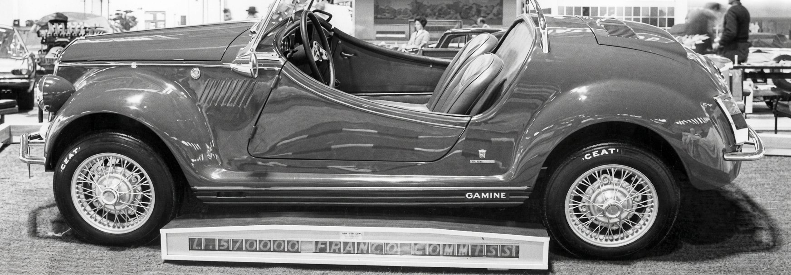
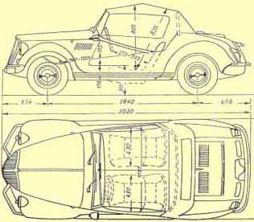

Carrozzeria Vignale · Torino, 1967–1971
Gamine
Tracking down every remaining Vignale Gamine still out there — one story, one chassis number at a time.

- Coachbuilder
- Vignale
- Chassis
- Fiat 500
- Production
- 1967–1971
- Weight
- 480 kg
- Length
- ≈ 3.0 m
- Site online since
- 1997 (29 yrs)
The story
Many people link the name Vignale to earlier models from e.g. Ferrari and Maserati. Few people know that Alfredo actually built cars under his own name as well. For the Gamine, Vignale used a Fiat 500 chassis as a base. It was in production from 1967 until 1971. With 480kg and just over 3 metres long, it is most probably the tiniest convertible Vignale designed! Until now, the exact number of Gamines produced remains unknown. Hopefully, one day all remaining Gamines will be united at this website...
Enjoy these pages & please don't hesitate to email any Vignale related material!

The Vignale Gamine book
Published by Guus Beliën in 2024, it tells the complete history. Dutch + English translation.
More about the book

Got Vignale related material?
Photos, stories, documents — anything Gamine related is welcome.
Email the webmaster